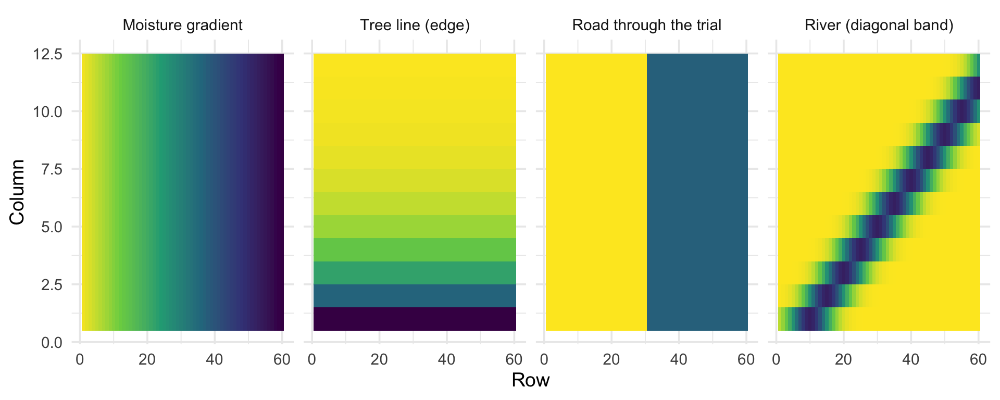
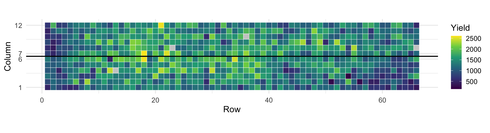
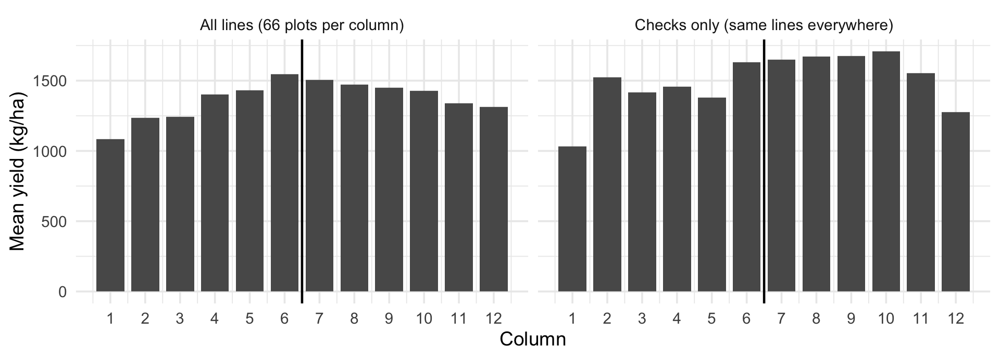
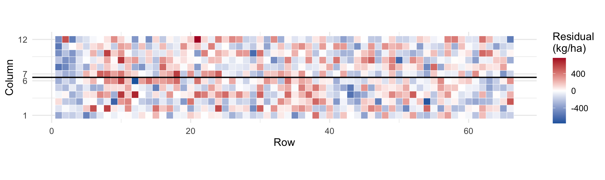
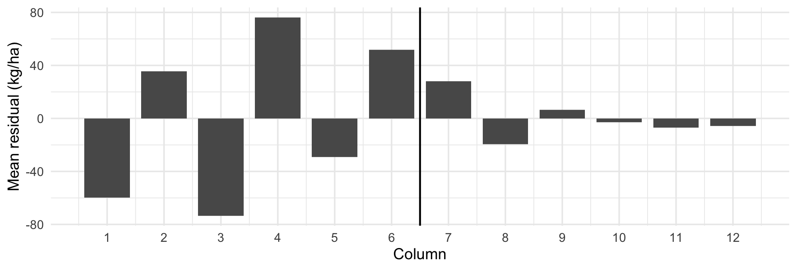
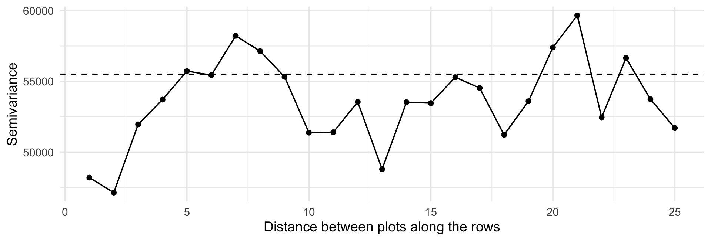
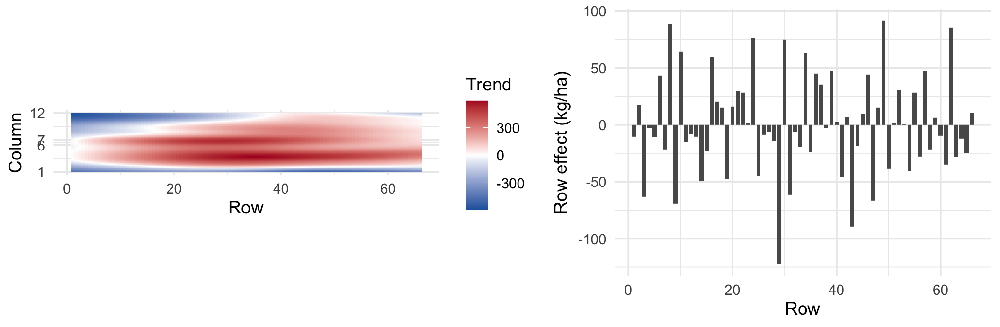
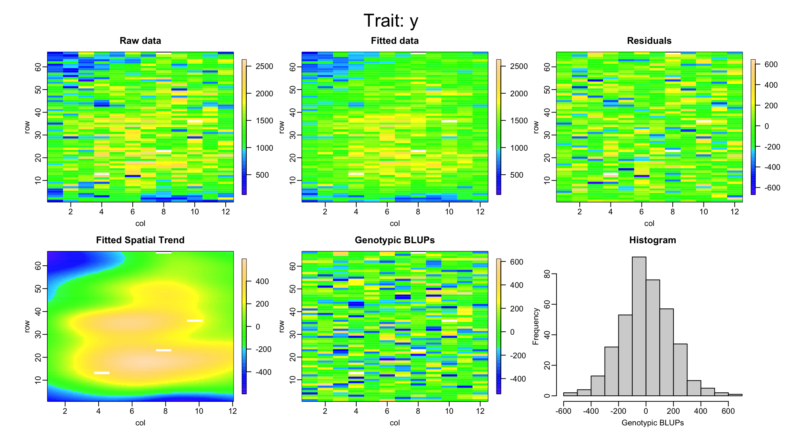

Regional Training Course on Experimental Design and Data Analysis for the Advancement of Mutant Populations (RER5030)
12 November 2026
| Block | Topic |
|---|---|
| 1 | Why the position of a plot matters |
| 2 | Looking for spatial patterns: residual maps and variograms |
| 3 | Spatial models with SpATS (2D P-splines) |
| 4 | Mr.Bean: the same analysis without code |
| 5 | Spatial against non-spatial: does it pay? |
| 6 | Design or analysis? |
| 7 | A complete single-trial workflow, exercise and discussion |
Goal: leave able to look at a trial as a map, decide if a spatial model is needed, fit it, and report how much precision it adds.
Why the position of a plot matters

Schematic surfaces, not data. Darker is lower yield.
If the ranking mixes genes and soil, the selection gain is lower than expected, and the best lines are not always the ones we advance.
YdHa_clean (kg/ha)

Lines are randomized, so this is environment: from 1,082 kg/ha in column 1 to 1,545 in column 6. An edge-to-centre gradient of 463 kg/ha.
Looking for spatial patterns


Blocks of two columns (1-2, 3-4, 5-6): the residual still rises from -60 to 35, from -74 to 76 and from -29 to 52 kg/ha. A block cannot remove a gradient that runs inside it.

Weak local correlation along the rows: the main structure is the gradient across the columns.
Use it when at least two of these are true:
If the residuals look random, the extra model buys nothing and costs complexity.
Spatial models with SpATS
Rodriguez-Alvarez, Boer, van Eeuwijk & Eilers (2018). Spatial Statistics 23: 52-71.
| Argument | Meaning |
|---|---|
genotype.as.random |
TRUE gives BLUPs, FALSE gives BLUEs |
PSANOVA(col, row, nseg) |
the surface; nseg about half the number of columns and rows |
fixed |
the replicate |
random |
row, column and block as factors |
col and row as numbers go in PSANOVA() (distance). rowf and colf as factors go in random.
# A tibble: 5 × 3
Term `Effective dimension` `Number of levels`
<chr> <dbl> <dbl>
1 Lines 244. 380
2 Smooth surface 25.9 NA
3 Rows 24.5 66
4 Columns 2.1 12
5 Incomplete blocks 1.4 36

blup_sp <- predict(m_sp, which = "line") |>
select(line, BLUP = predicted.values, SE = standard.errors) |>
mutate(BLUP = BLUP + m_sp$coeff[["repR2"]] / 2)
m_sp_fix <- fit_spats(beans, genotype_random = FALSE)
blue_sp <- predict(m_sp_fix, which = "line") |>
select(line, BLUE = predicted.values, SE_BLUE = standard.errors) |>
mutate(BLUE = BLUE + m_sp_fix$coeff[["repR2"]] / 2)
left_join(blue_sp, blup_sp, by = "line") |> arrange(desc(BLUP)) |> head(5) line BLUE SE_BLUE BLUP SE
1 SEF_060 2242.021 180.1600 1871.757 143.9013
2 DOR_364 2114.316 181.6090 1809.103 144.3952
3 DAB_366 2036.997 178.3529 1770.903 142.6014
4 TIO_CANELA_75 1898.100 133.8103 1744.753 116.0499
5 SEN_056 1954.716 180.5070 1714.841 143.2401Mr.Bean: SpATS without code
Example_Beans.csv is ready: one row per plot)Good to share an analysis with colleagues who do not use R, and to check your own code. Limit: the analysis is not saved as a script.
remotes::install_github("AparicioJohan/MrBeanApp"), then library(MrBean) and run_app()apariciojohan.github.io/MrBeanAppPractical: run the beans file in the app and in R, and compare the heritability and the top 5 lines.
Spatial against non-spatial: does it pay?
# A tibble: 4 × 4
Model `Residual SD` Heritability AIC
<chr> <dbl> <dbl> <dbl>
1 Incomplete blocks (Day 3) 282. 0.54 11510.
2 Blocks + rows + columns 241. 0.6 11438.
3 Rows + columns, no blocks 251. 0.59 11465.
4 SpATS 231. 0.64 NA lme4 models, lower is betterResidual SD from 282 to 231 kg/ha; heritability of yield from 0.54 to 0.64.
correlation selected in_both
0.94 38.00 30.00 # A tibble: 4 × 2
Model `Correlation with the other replicate`
<chr> <dbl>
1 SpATS 0.367
2 Blocks + rows + columns 0.36
3 Incomplete blocks 0.337
4 Raw means 0.288Adjusting for the field beats raw means, and the spatial model is slightly better than the blocks alone. With two replicates, do not over-read small differences.
# A tibble: 5 × 4
Trait `Incomplete blocks` SpATS Gain
<chr> <dbl> <dbl> <dbl>
1 Yield 0.542 0.644 0.102
2 Days to flowering 0.646 0.646 0
3 Days to maturity 0.644 0.653 0.01
4 Plant height 0.123 0.157 0.034
5 100-seed weight 0.86 0.868 0.008Large gain for yield, the trait most affected by soil and water. Almost nothing for flowering, maturity and seed weight. The spatial model is a tool for the traits that need it, not a default.
Design or analysis?
| Problem | Design | Analysis |
|---|---|---|
| Known gradient | Blocks across the gradient | Row/column effects, SpATS surface |
| Unknown patches | Small incomplete blocks, row-column | Spatial model, residual map |
| Border competition | Border plots, plot size | Do not analyse borders as data |
| Unreplicated or p-rep | Checks spread over the field | Checks as reference, surface |
| Large plot noise | Larger plots, more replicates | Not recoverable |
Design for the precision you need; analyse for the heterogeneity that remains.
Single-trial workflow, exercise and discussion
[1] 0.644# A tibble: 5 × 6
line BLUP SE reliability rank check
<chr> <dbl> <dbl> <dbl> <int> <lgl>
1 SEF_060 1872. 144. 0.610 1 FALSE
2 DOR_364 1809. 144. 0.607 2 FALSE
3 DAB_366 1771. 143. 0.617 3 FALSE
4 TIO_CANELA_75 1745. 116. 0.746 4 TRUE
5 SEN_056 1715. 143. 0.613 5 FALSEA high BLUP with low reliability is a candidate to retest; with high reliability, a solid advance.
With the same trial:
single_trial() for DPM with and without space. Is the correction justified?Hint: compare the heritability gain with the rule of this morning.
SpATS fits a smooth surface with random row, column and block effects, and returns BLUEs, BLUPs and heritability; Mr.Bean does it without codeLuis Fernando Delgado Muñoz
Luis Fernando Delgado Muñoz | RTC RER5030 | Day 4: Spatial analysis